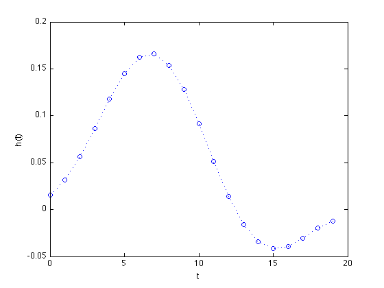
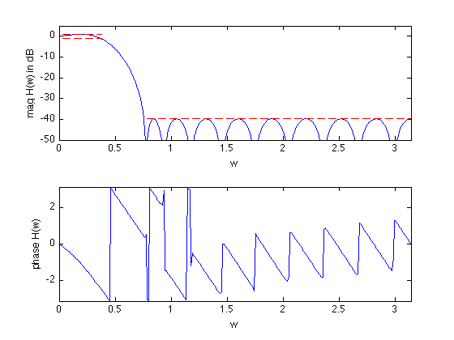

% "FIR Filter Design via Spectral Factorization and Convex Optimization" % by S.-P. Wu, S. Boyd, and L. Vandenberghe % (figures are generated) % % Designs an FIR lowpass filter using spectral factorization method where we: % - minimize maximum stopband attenuation % - have a constraint on the maximum passband ripple % % minimize max |H(w)| for w in the stopband % s.t. 1/delta <= |H(w)| <= delta for w in the passband % % We change variables via spectral factorization method and get: % % minimize max R(w) for w in the stopband % s.t. (1/delta)^2 <= R(w) <= delta^2 for w in the passband % R(w) >= 0 for all w % % where R(w) is the squared magnited of the frequency response % (and the Fourier transform of the autocorrelation coefficients r). % Variables are coeffients r. delta is the allowed passband ripple. % This is a convex problem (can be formulated as an LP after sampling). % % Written for CVX by Almir Mutapcic 02/02/06 %********************************************************************* % user's filter specs (for a low-pass filter example) %********************************************************************* % number of FIR coefficients (including the zeroth one) n = 20; wpass = 0.12*pi; % end of the passband wstop = 0.24*pi; % start of the stopband delta = 1; % maximum passband ripple in dB (+/- around 0 dB) %********************************************************************* % create optimization parameters %********************************************************************* % rule-of-thumb discretization (from Cheney's Approx. Theory book) m = 15*n; w = linspace(0,pi,m)'; % omega % A is the matrix used to compute the power spectrum % A(w,:) = [1 2*cos(w) 2*cos(2*w) ... 2*cos(n*w)] A = [ones(m,1) 2*cos(kron(w,[1:n-1]))]; % passband 0 <= w <= w_pass ind = find((0 <= w) & (w <= wpass)); % passband Lp = 10^(-delta/20)*ones(length(ind),1); Up = 10^(+delta/20)*ones(length(ind),1); Ap = A(ind,:); % transition band is not constrained (w_pass <= w <= w_stop) % stopband (w_stop <= w) ind = find((wstop <= w) & (w <= pi)); % stopband As = A(ind,:); %******************************************************************** % optimization %******************************************************************** % formulate and solve the magnitude design problem cvx_begin variable r(n,1) % this is a feasibility problem minimize( max( abs( As*r ) ) ) subject to % passband constraints Ap*r >= (Lp.^2); Ap*r <= (Up.^2); % nonnegative-real constraint for all frequencies (a bit redundant) A*r >= 0; cvx_end % check if problem was successfully solved disp(['Problem is ' cvx_status]) if ~strfind(cvx_status,'Solved') return end % compute the spectral factorization h = spectral_fact(r); % compute the max attenuation in the stopband (convert to original vars) Ustop = 10*log10(cvx_optval); fprintf(1,'The max attenuation in the stopband is %3.2f dB.\n\n',Ustop); %********************************************************************* % plotting routines %********************************************************************* % frequency response of the designed filter, where j = sqrt(-1) H = [exp(-j*kron(w,[0:n-1]))]*h; figure(1) % FIR impulse response plot([0:n-1],h','o',[0:n-1],h','b:') xlabel('t'), ylabel('h(t)') figure(2) % magnitude subplot(2,1,1) plot(w,20*log10(abs(H)), ... [0 wpass],[delta delta],'r--', ... [0 wpass],[-delta -delta],'r--', ... [wstop pi],[Ustop Ustop],'r--') xlabel('w') ylabel('mag H(w) in dB') axis([0 pi -50 5]) % phase subplot(2,1,2) plot(w,angle(H)) axis([0,pi,-pi,pi]) xlabel('w'), ylabel('phase H(w)')
Calling sedumi: 1056 variables, 249 equality constraints For improved efficiency, sedumi is solving the dual problem. ------------------------------------------------------------ SeDuMi 1.21 by AdvOL, 2005-2008 and Jos F. Sturm, 1998-2003. Alg = 2: xz-corrector, Adaptive Step-Differentiation, theta = 0.250, beta = 0.500 eqs m = 249, order n = 1057, dim = 1057, blocks = 1 nnz(A) = 17700 + 0, nnz(ADA) = 10245, nnz(L) = 5247 it : b*y gap delta rate t/tP* t/tD* feas cg cg prec 0 : 1.90E+02 0.000 1 : -1.06E+00 6.58E+01 0.000 0.3469 0.9000 0.9000 4.98 1 1 1.1E+02 2 : -8.73E-01 1.89E+01 0.000 0.2873 0.9000 0.9000 2.17 1 1 1.9E+01 3 : -4.11E-01 8.89E+00 0.000 0.4702 0.9000 0.9000 2.48 1 1 4.6E+00 4 : -8.20E-02 4.61E+00 0.000 0.5189 0.9000 0.9000 3.86 1 1 9.9E-01 5 : -2.81E-02 2.13E+00 0.000 0.4625 0.9000 0.9000 1.97 1 1 3.5E-01 6 : -1.21E-02 1.00E+00 0.000 0.4692 0.9000 0.9000 1.40 1 1 1.5E-01 7 : -4.89E-03 4.14E-01 0.000 0.4138 0.9000 0.9000 1.17 1 1 6.6E-02 8 : -2.32E-03 1.85E-01 0.000 0.4468 0.9000 0.9000 1.07 1 1 3.4E-02 9 : -1.21E-03 8.78E-02 0.000 0.4748 0.9000 0.9000 1.03 1 1 2.1E-02 10 : -1.21E-03 1.34E-02 0.000 0.1526 0.9000 0.0000 0.98 1 1 2.6E-02 11 : -2.60E-04 2.53E-03 0.000 0.1885 0.9028 0.9000 1.00 1 1 6.9E-03 12 : -1.61E-04 1.34E-03 0.000 0.5297 0.9037 0.9000 1.00 1 1 3.8E-03 13 : -1.61E-04 8.59E-04 0.349 0.6416 0.9000 0.0000 0.99 1 1 3.3E-03 14 : -1.38E-04 6.22E-04 0.002 0.7239 0.9000 0.9000 0.98 1 1 2.4E-03 15 : -1.23E-04 1.58E-04 0.000 0.2543 0.9548 0.9000 0.96 1 1 1.3E-03 16 : -1.07E-04 2.95E-05 0.000 0.1866 0.9176 0.9000 0.99 1 1 3.4E-04 17 : -1.05E-04 6.94E-06 0.000 0.2351 0.9096 0.9000 1.00 1 1 8.6E-05 18 : -1.05E-04 1.33E-06 0.000 0.1925 0.9046 0.9000 1.00 1 1 1.7E-05 19 : -1.05E-04 5.46E-08 0.000 0.0409 0.9905 0.9900 1.00 1 1 7.3E-07 20 : -1.05E-04 2.70E-11 0.000 0.0005 0.9999 0.9932 1.00 2 2 iter seconds digits c*x b*y 20 0.1 13.3 -1.0483675450e-04 -1.0483675450e-04 |Ax-b| = 7.8e-16, [Ay-c]_+ = 6.5E-17, |x|= 7.5e-01, |y|= 3.1e-01 Detailed timing (sec) Pre IPM Post 1.000E-02 1.000E-01 0.000E+00 Max-norms: ||b||=1, ||c|| = 1.258925e+00, Cholesky |add|=0, |skip| = 0, ||L.L|| = 2.27296. ------------------------------------------------------------ Status: Solved Optimal value (cvx_optval): +0.000104837 Problem is Solved The max attenuation in the stopband is -39.79 dB.
 